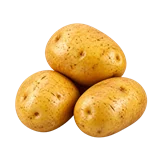

होम / आलू

आलू का भाव आज | Potato Mandi Price Today
आलू के आज के उपलब्ध मंडी भाव देखें—डीसा, इंदौर, जयपुर (बस्सी) और कोटा के मॉडल, न्यूनतम और अधिकतम रेट और प्रति किलो भाव।
नीचे मंडी-वार सूची में आलू के उपलब्ध भाव दिए हैं। मंडी के नाम पर क्लिक करके उस मंडी की दूसरी फसलों के भाव भी देख सकते हैं।
आलू का भाव कैसे देखें और रेट किन बातों से बदलता है
आलू का भाव अलग-अलग मंडियों में आवक, छंटाई, आकार, गुणवत्ता और स्थानीय मांग के अनुसार बदल सकता है। मंडी भाव और खुदरा दुकान का भाव एक जैसा होना जरूरी नहीं है, इसलिए बिक्री या खरीद से पहले उपलब्ध मंडी records की तुलना उपयोगी रहती है।
आज का आलू भाव कैसे देखें
इस पेज की मंडी-वार तालिका में न्यूनतम, मॉडल और अधिकतम भाव देखें। अपनी नज़दीकी मंडी के साथ उपलब्ध दूसरी मंडियों की range देखने से केवल एक भाव पर निर्भर रहने की जरूरत नहीं पड़ती।
- आलू की मंडी और राज्य चुनकर भाव देखें।
- न्यूनतम, मॉडल और अधिकतम भाव के अंतर को समझें।
- भाव को प्रति क्विंटल और जरूरत हो तो प्रति किलो में देखें।
आकार, छंटाई और गुणवत्ता का असर
आलू में size, छंटाई, छिलके की स्थिति, कटे या सड़े कंद और lot की एकरूपता से grade बनते हैं। बड़े, साफ और एक जैसे कंद की बोली छोटे या मिश्रित lot से अलग हो सकती है।
नई फसल, cold storage और आवक
नई खुदाई की आवक और cold storage से निकला आलू बाजार में अलग स्थिति बना सकते हैं। स्थानीय उत्पादन, परिवहन और खरीदारों की मांग बदलने पर मंडी की भाव-range भी बदल सकती है।
आलू बेचने या खरीदने से पहले ध्यान रखें
- छंटा हुआ और मिश्रित माल अलग-अलग रखें।
- सड़े, कटे या बहुत छोटे आलू अच्छे lot में न मिलाएँ।
- मंडी भाव और खुदरा भाव की सीधी तुलना न करें।
- बिक्री से पहले 2–3 नज़दीकी मंडियों के उपलब्ध भाव देखें।
अक्सर पूछे जाने वाले सवाल
आलू का भाव किस इकाई में दिखता है?
मुख्य भाव रुपये प्रति क्विंटल में है। यह सब्जी है, इसलिए उसके साथ अनुमानित रुपये प्रति किलो भी दिखाया जाता है।
मॉडल भाव का क्या अर्थ है?
मॉडल भाव उस दिन मंडी में सबसे आम दर्ज दर है। यह न्यूनतम या अधिकतम भाव नहीं है।